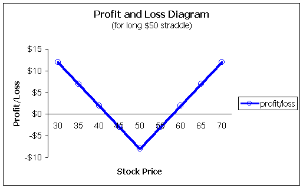
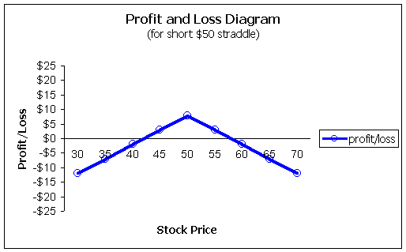
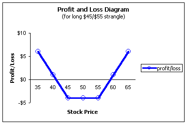
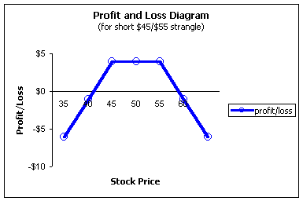

A long straddle is a strategy where the investor buys a call and buys a put with the same strike and time to expiration.
The most common use of the strategy is when the trader expects a large move but is unsure about which direction. This strategy is often suggested, even by professionals, to be used prior to a big announcement such as an earnings report or FDA approval for a drug company. If the report is favorable, the stock may run wild to the upside; if not, it may come crashing down. However, please bear in mind that other participants in the market are thinking the same thing, so the put and call will be bid up to much higher prices making it difficult to recoup your costs!
Probably a better use of the straddle is to buy them if you expect increases in volatility. Increased volatility will increase the price of both calls and puts. So, if you are faced with a big announcement or news, you should buy the straddle only if you think the market has underestimated the volatility.
Nonetheless, the strategy attempts to play both sides of the market hoping that the move in the underlying stock, whether up or down, is sufficient to cover the cost of the losing option.
A trader buys a March $50 call for $5, and a March $50 put for $3 for a total of $8.
The profit and loss diagram looks like this:
Because the trader buys both the call and put, the break-even points will be raised significantly. In this case, the stock must rise above $58 (the strike price plus both premiums) or fall below $42 (the strike price minus both premiums). Because only one of the options -- either the call or put -- can expire in-the-money[1], the downside to this strategy is that you are effectively buying a very expensive call and a very expensive put. Why? Again, only one of the options can have value at expiration not both. However, both premiums must be recovered before a profit can be made. It's like buying a call for the price of a call and a put and buying a put for the price of a call and a put. If you think making money with calls or puts is tough, the straddle will magnify this difficulty.
[1] Actually, this is true the majority of the time; either the call or put finish with intrinsic value. However, if there is a partial tender offer for the underlying stock, both the call and put may go in-the-money! This happens because the target stock will be trading higher and so will the calls. But after the purchase, the target stock will normally fall back to the original price. Traders will start pricing the puts with this intrinsic value causing both the calls and puts to be in-the-money.
Be very careful if you hear of seminars or books that profess to show you how to "make money in any market" as this is the strategy they are often alluding to. If the stock moves up or down, technically you are making money on one of the legs -- either the call or put -- but being profitable is another story.
This is not to say that the straddle is a bad strategy. Just don't get lured into thinking it's a sure bet. The two premiums will almost always make the straddle a sure loser (in trader's jargon, the high gamma and negative theta components usually won't allow it to be profitable). Use the straddle when you are, in fact, expecting a really BIG move in one direction or another and you feel the market has underpriced it.
If the long straddle is almost a sure loser, then the short straddle must be the ultimate option strategy, right? Not so fast. Yes, it's true that over time the short straddle will win far more than it will lose; however, when straddles go against you, they can bite hard! You need to be prepared to accept a large loss before entering into the short straddle.
From a profit and loss standpoint:
Here, the short trader will receive $8 in our hypothetical example and have break-even points of $42 and $58. Beyond these points, large losses can quickly develop!
There is a nice alternative for the short straddle called a covered straddle. Here, the investor is long the stock and then sells the straddle. Assuming the number of call options does not exceed the equivalent number of long shares, the investor is fully covered to the upside. The risk is that the stock falls. But if the investor is willing to buy more shares, this can be a powerful strategy!!
An investor is long 500 shares of stock purchased at $50. He then sells 5 contracts of the above straddle for $8. The investor will receive 500 * $8 = $4,000. If the stock is above $50 at expiration, the investor will be assigned on the short call and sell his shares -- effectively for $58. But if the stock is below $50, the trader will be assigned on the short puts and be forced to buy stock at $50, which is effectively $42 when you consider the $8 premium from the straddle. You can see the benefits of this strategy! If you are willing to buy more, and are not afraid to sell your shares, the covered straddle is a tough one to beat. It is called a covered straddle because the long shares cover the most serious risk in that the stock moves higher.
A related strategy to straddles is one called a strangle and sometimes called a combination[2] or "combo" for short.
[2] The term combo varies between markets. In the equity markets, a combo is usually long calls and long puts with different strikes. In the futures markets, however, a combo is usually a synthetic stock position -- long calls and short puts with the same strikes.
The idea behind straddles and strangles is the same in that the investor is looking for a large move in one direction or another. The strangle differs in that the strike prices are different. The expiration months are the same.
Earlier, we assumed a trader with the stock at $50 bought the $50 call and $50 put for a total of $8. Now let's say that same trader buys a strangle instead. He may buy the $55 call and the $45 put for a total of only $5. But the tradeoff is big; this trader's break-even points are now $40 and $60 instead of $42 and $58 with the straddle trader.
This is sometimes called a $45/$55 strangle.
This does not mean that strangles are a poor strategy. It just means you should be careful in choosing it. Use it when you really expect monstrous moves in the underlying, and not because it's cheaper than the straddle.
From a profit and loss standpoint:
It is easy to see that the stock must make a really large move in order to be profitable! Also, there is no reason the trader must limit themselves to a 5-point difference in strikes. One could also enter a $40/$50 strangle or any other combination as long as they cover the same expiration months. Keep in mind though, as you make the difference in strikes wider, your break-even points become wider as well.
The short strangle is similar to the short straddle but, from a risk/reward standpoint, it may be a better deal for most investors simply for the fact that the break-even points are stretched so wide.
One small point should be clarified here. In the above example, we assumed the stock was at $50 and the trader bought a $45 put and $55 call to complete the strangle.
This is specifically known as an out-of-the-money strangle because both the call and put are out of the money. There is another alternative position -- sometimes called a guts by floor traders where the trader will buy, say, the $45 call and the $55 put.
Be careful when discussing strangles with your broker, as this is a very common mistake! Say the $45 call is trading for $8, and the $55 put is trading at $6 for a total purchase price of $14. It is very easy to think that the maximum loss is $14. However, this position has a built-in box position because one of the options must always be in-the-money. This particular strangle must be worth $10 at expiration (of course, the bid/ask spreads will make it worth slightly less). Why? Work through some numbers and you will see that it is impossible to have both the call and put expire worthless. In the original example, the call and put would expire worthless for any stock price between $45 and $55.
The maximum loss for this in-the-money-strangle is only $4. In addition, you get the benefits of in-the-money calls and puts working for you so your time decay is diminished significantly.
Just be aware that there is a difference. An out-of-the-money strangle has the put with the lower strike and the call with the higher strike. In this case, the maximum loss is the total cost of the two positions.
The in-the-money strangle has the call with the lower strike and the put with the higher strike -- exactly the opposite of the out-of-the-money strangle. Here, the maximum that can be lost is the premium minus the difference in strikes. In our example, $14 -$10 = $4.
Straddles and strangles are popular strategies, especially in a lot of beginning courses because they are combination positions yet easy to understand. From a practical trading standpoint, the long straddle/strangle is not too practical because of the wide break-even points. Typically, the stock will bounce around between these two points and you will just watch you position erode from the time decay (high negative theta of the position).
From a traders viewpoint, the short positions are much more desirable, but just be sure you are, in fact, willing to assume risks if it should go against you.
In fact, you can even combine these strategies. If you short a straddle and buy a strangle, you effectively put protective wings on the upside and downside risks of the short straddle. The combination of these two positions -- short straddle and long strangle -- is also called a butterfly spread! (Please see our section on Butterfly Spreads for more information.)